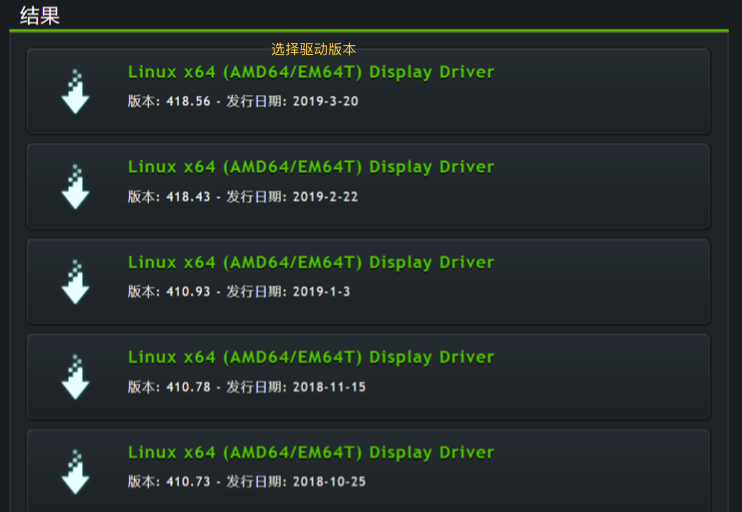

实用工具教程
国内如何下载谷歌网盘link¶
https://api.moeclub.org/GoogleDrive/{FileID} # 填写fileId后访问即可下载。
Ubuntu下GPU环境搭建¶
系统： Ubuntu-16.04 / Ubuntu-18.04
显卡： GeForce GTX 1080Ti
驱动： Driver Version：410.93 / 其他
安装驱动(软件安装)
-
打开
ubuntu16/18的software & updates -
安装完成后，重启电脑，输入命令:
nvidia-smi,输出如下,则表明安装成功
安装驱动(命令行安装)
- 禁用自带驱动
# 1. 卸载之前驱动，若无驱动可以省略
sudo apt-get purge nvidia*
# 2. 禁用自带的nouveau驱动
sudo gedit /etc/modprobe.d/blacklist.conf # 打开配置文件
blacklist nouveau # 文末添加，保存即可
sudo update-initramfs -u # 更新文件使其生效
# 3. 重启(可省略)
sudo reboot
# 4. 查看自带驱动是否被禁用
lsmod | grep nouveau # 无输出则表明已被禁用
- 下载安装NVIDIA驱动:官网链接

# 1. 给下载好的驱动赋予可执行权限
sudo chmod a+x NVIDIA-Linux-x86_64-390.48.run
# 2. 关闭X服务
sudo service lightdm stop
# 3. 运行驱动可执行文件
sudo ./NVIDIA-Linux-x86_64-390.48.run –no-opengl-files
# 4. 安装完后重启，输入命令:nvidia-smi，如下图显示则安装成功
安装CUDA
- 官网下载
cuda官网链接，建议选择cuda9.0/cuda10.0/cuda10.1，当然，你也可以都下载安装，这样可以设置多版本共存，在训练的时候也方便。
- 开始安装:
root权限
# 1. 启动安装
sudo sh cuda_9.0.176_384.81_linux.run# 注意:在提示是否安装显卡驱动时，一定选择no，其他各项提示选择是，并默认安装路径即可。
# 下面是多版本cuda的介绍(可选)
# 2. 安装多个版本cuda
sudo sh cuda_10.0***.run # cuda官网下载
sudo sh cuda_10.1***.run # cuda官网下载
# 3. 默认路径:/usr/local/cuda，此时’/usr/local/‘目录下会有‘cuda’和'cuda-9.0'两个目录，实际上'cuda'目录是‘cuda-9.0’目录的link:如果不清楚`ln`命令用法,自行百度。
# 4. 如果你想安装多个cuda版本，你只需要删除'cuda'目录，并把对应的'cuda-xx'目录链接到该目录下即可，例如选择使用cuda-10.0版本(前提是你已经安装好了):
sudo ln -s /usr/local/cuda-10.0 /usr/local/cuda # 这样就可以切换cuda版本了
- 开始安装:非
root权限，普通用户
# 1.下载cuda:https://developer.nvidia.com/cuda-toolkit-archive 格式选runfile(local)
# 2.下载对应的cudnn:https://developer.nvidia.com/rdp/cudnn-download,备用
# 3.选择合适的安装路径和lib位置，后面要用到
cd path
mkdir cuda-10.1
mkdir cuda-10.1/mylib
# 4.安装CUDA
sh cuda_10.1.243_418.87.00_linux.run
# 5.安装过程中的选择
# 5.1 选择accept 后，更改安装选项（'X' 代表选中，这里我只安装CUDA Toolkit，一般不搞CUDA编程单跑深度学习就够了），当然，也可以选择多点
┌─────────────────────────────────────────────────────────────────────────────
| CUDA Installer
│ - [ ] Driver
│ [ ] 418.87.00
│ + [X] CUDA Toolkit 10.1
│ [ ] CUDA Samples 10.1
│ [ ] CUDA Demo Suite 10.1
│ [ ] CUDA Documentation 10.1
│ Options
│ Install
# 5.2 进入options选项，这里设置自定义的cuda安装路径和lib路径
┌─────────────────────────────────────────────────────────────────────────────
│ Options
│ Driver Options
│ Toolkit Options # 这里更改自定义安装路径
│ Samples Options
│ Library install path (Blank for system default)# 这里更改lib安装路径
│ Done
# 5.3 CUDA Toolkit 去掉全部含有/usr的目录，进入 Change Toolkit Install Path设置cuda安装到自己具有写入权限的，就是刚才建好的cuda-10.1
┌─────────────────────────────────────────────────────────────────────────────
│ CUDA Toolkit
│ Change Toolkit Install Path # 在这里按Enter键来更改安装路径即可，绝对路径
│ [ ] Create symbolic link from /usr/local/cuda
│ - [ ] Create desktop menu shortcuts
│ [ ] Yes
│ [ ] No
│ [ ] Install manpage documents to /usr/share/man
│ Done
# 5.4 回到options菜单，更改Library install path (不改不行，它会偷偷写入/var/lib)
┌─────────────────────────────────────────────────────────────────────────────
│ Library install path (Blank for system default)
│ /home/chenyuyang/cuda-10.1/mylib/
# 6.然后在.bashrc中写入安装路径即可
- 把安装路径写入到配置环境中
# 1. 打开环境变量设置的配置文件
sudo vim ~/.bashrc
# 2. 导入安装路径
export LD_LIBRARY_PATH=$LD_LIBRARY_PATH:/usr/local/cuda/lib64
# 非root用户有点不同
export LD_LIBRARY_PATH=$LD_LIBRARY_PATH:/home/chenyuyang/cuda/lib64:/home/chenyuyang/cuda-10.1/mylib/lib64
export PATH=$PATH:/usr/local/cuda/bin
export CUDA_HOME=$CUDA_HOME:/usr/local/cuda # ’$CUDA_HOME:‘可以去掉，因为有些项目编译过程中会报错，例如:maskrcnn_benchmark项目中编译过程中就会报错
# 3. 使得路径生效
source ~/.bashrc
- 查看是否安装成功,输入命令:
nvcc --version
cudnn安装
- 官网下载
cudnn官网链接，注意:这里要选择匹配你Cuda版本的cudnn版本，如果你安装多个版本Cuda，需要把各自对应的cudnn版本也下载下来 - 把对应版本
cudnn复制到Cuda中(可以把cudnn理解为Cuda的插件)，如果你是多版本，你只需要安装对应版本一一复制即可，注意:Cuda默认安装路径/usr/local/cuda
# 安装cudnn 非root用户就不要加sudo了
sudo cp cuda/include/cudnn.h /usr/local/cuda/include/
sudo cp cuda/lib64/libcudnn* /usr/local/cuda/lib64/
sudo chmod a+r /usr/local/cuda/include/cudnn.h
sudo chmod a+r /usr/local/cuda/lib64/libcudnn*
# 8.0以后的版本
$ sudo cp cuda/include/cudnn*.h /usr/local/cuda/include
$ sudo cp -P cuda/lib64/libcudnn* /usr/local/cuda/lib64
$ sudo chmod a+r /usr/local/cuda/include/cudnn*.h /usr/local/cuda/lib64/libcudnn*
- 查看是
cudnn是否安装成功,成功后会输出cudnn版本
# 查看cudnn版本命令
cat /usr/local/cuda/include/cudnn.h | grep CUDNN_MAJOR -A 2
环境搭建成功
vim/linux的基本使用¶
git的基本使用¶
git博客-easy|git博客-hard|git博客-thrid
# 1.初始化
git init # 初始化仓库
git clone xxx.git renameProject # 克隆仓库
# 2.跟踪状态等
# 所有文件无外乎两种状态：跟踪或未跟踪
git status # 检查当前文件状态，会显示文件是否被跟踪,除了新建文件且没有add是无跟踪状态，其他属于跟踪状态，包含修改，暂存，未更新等
git add xxx # 跟踪新文件,存入缓存区
git rm --cached xxx # 从缓存区移除
git rm --cached log/\*.log # 从缓存区批量删除log日志
git diff # 比git status更详细，比较的是工作目录中还没暂存的改动和暂存区域快照之间的差异
git diff –cached # 比较已经暂存起来的文件和上次提交时的快照之间的差异
git commit -m "提交说明" # 每一次运行提交操作，都是对你项目作一次快照，以后可以回到这个状态，或者进行比较
# 3.忽略某些文件
vi .gitignore
$ cat.gitignore
*.[o,a] # 忽略所有以 .o 或 .a 结尾的文件,常是编译过程中出现，不需要跟踪他们的版本
*~ # 忽略所有以波浪符（~）结尾的文件，常是文本编辑软件保存的副本。
# 3.1 星号（*）匹配零个或多个任意字符；
# 3.2 [abc] 匹配任何一个列在方括号中的字符（这个例子要么匹配一个 a，要么匹配一个 b，要么匹配一个 c）；
# 3.3 问号（?）只匹配一个任意字符；
# 3.4 如果在方括号中使用短划线分隔两个字符，表示所有在这两个字符范围内的都可以匹配（比如 [0-9] 表示匹配所有 0 到 9 的数字）。
# 举个小例子
*.a # 忽略所有 .a 结尾的文件
!lib.a # 但 lib.a 除外 # ！取反
/TODO # 仅仅忽略项目根目录下的 TODO 文件，不包括 subdir/TODO
build/ # 忽略 build/ 目录下的所有文件，目录必须带反斜杠(/)证明忽略的是目录
doc/*.txt # 会忽略 doc/notes.txt 但不包括 doc/server/arch.txt